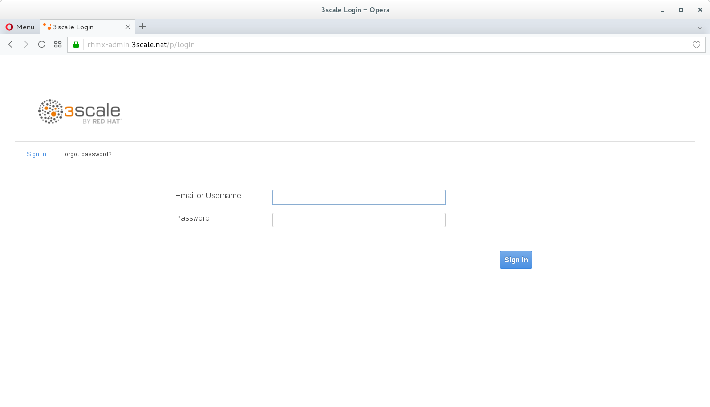
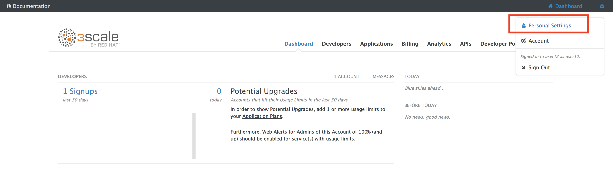
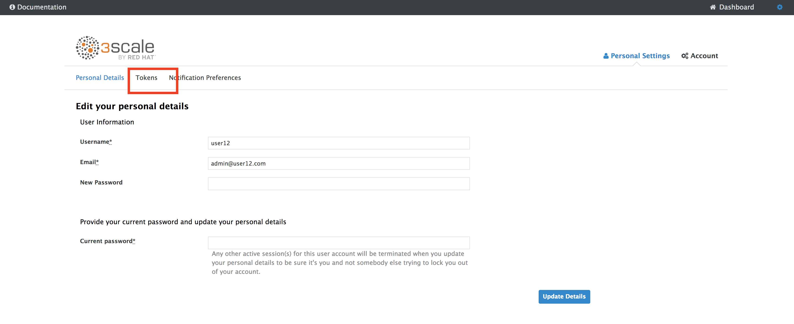
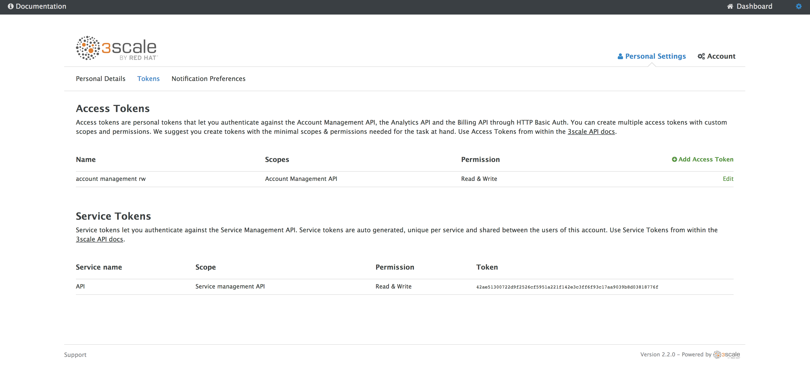
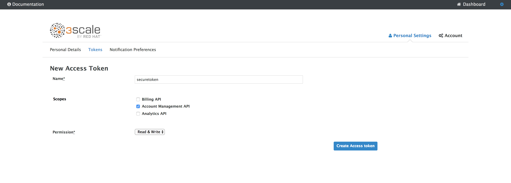
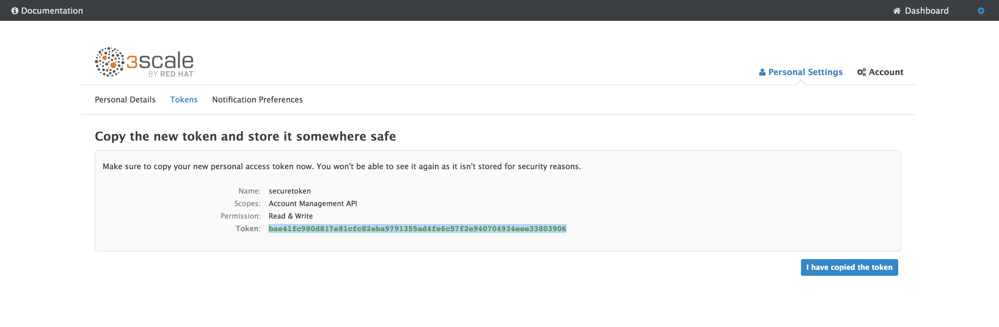

Lab 6
Managed API Endpoints
Take control of your APIs
- Duration: 5 mins
- Audience: API Owners, Product Managers, Developers, Architects

Overview
Once you have APIs deployed in your environment, it becomes critically important to manage who may use them and for what purpose. You also need to begin to track usage of these different users to know who is/is not succeeding in their usage. For this reason in this lab you will be adding management capabilities to the API to give you control and visibility of it's usage.
Why Red Hat?
Red Hat provides one the leading API Management tools which provide management services. The 3scale API Management solution enables you to quickly and easy protect and manage your APIs.
Lab Instructions
Step 1: Get API Token for Automation
Your 3scale Admin Portal provides access to a number of configuration features. An administration token is needed when automating setups for your API. This step will let you create a new token for setup.
Open a browser window and navigate to 3Scale. Please check with you instructor if you need the link.
Log into 3scale using your designated user and password. Click on Sign In.
The first page you will land is the API Management Dashboard. Click on the Gear Icon on the top right-hand corner.
- Click Personal Settings
Click onto Tokens Tab.
Click Add Access Token link to create a new management token.
Create a new token that has the Read & Writeable rights to your management platform.
- Enter Name as securetoken, check the Account management API checkbox and READ & WRITE for Permission.
Please make sure you copy the Token to somewhere safe, and don't forget it. Click on I have copied the token to finish off.

Step 2: Start managing your APIs
By running the command lines, it will automatically setup the 3scale API configuration and start managing the API you have exposed!
In you command line terminal or in your Che terminal enter the following CURL command:
- Replace USERX as your user id, such as user1, OPENSHIFT_URL, YOUR_API_TOKEN you copied earlier.
- If you are not sure, check with your instructor
curl -X POST http://threescale-automate-international.apps.{OPENSHIFT_URL}/threescale/automate/{YOUR_API_TOKEN}/{USERX}/apps.{OPENSHIFT_URL}
For example:
curl -X POST http://threescale-automate-international.apps.ocp-ai.redhatgov.io/threescale/automate/5077c20822f2e284aaa48d9b2115551cc9605cb9617eb2479815a4209fea20d9/user1/apps.ocp-ai.redhatgov.io
API automated, DONE! should be returned as the result.
Save the Result as you will need it for the next lab
If the command was not Successful for you: - Log into 3Scale - Click on the API Menu - Check to see if the SSO Locations API was created - If so, go the Integrations Configuration and Edit the SSO Locations API - In the Edit menu, delete the SSO Locations API and try running the curl command again
Congratulations! You have configured 3scale access control layer as a proxy to only allow authenticated calls to your backend API. 3scale is also now:
- Authenticating (If you test with an incorrect API key it will fail)
- Recording calls (Visit the Analytics tab to check who is calling your API).
Steps Beyond
In this lab we just covered the basic creating of a proxy for our API service. Red Hat 3scale API Management also allows us to get a track of the security (as you can see in the next lab) as well as the usage of our API. If getting value from APIs is also important to you, 3scale allows you to monetize your APIs with it's embedded billing system.
Try to navigate through the rest of the tabs of your Administration Portal. Did you notice that there are application plans associated to your API? Application Plans allow you to take actions based on the usage of your API, like doing rate limiting or charging by hit or monthly usage.
Summary
You set up an API management service and API proxies to control traffic into your API. From now on you will be able to issue keys and rights to users wishing to access the API.